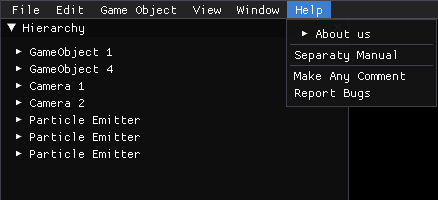

Space Adventure

About the Engine
Separaty Engine is a game engine developed by our class in year 3 of UPC: Videogame Design
and
Development Degree
which objective was to serve as, apart from learning the basic elements that a game engine
must
have,as a platform to develop a basic particle system in order to prepare for our upcoming
project, currently known as Guardians of the Galaxy:
Battle for the Universe.
The engine is based on a full Entity Component System similar to Unity, and it's meant to
support basic elements in an engine, such as asset management, a hierarchy to access
gameobjects, inspector to edit gameobjects, 3D rendering, saving and loading information
using
json serialization and our custom Particle System.
Contributions
The engine was build almost from the ground up by me along with GerardMartinez02 as part of our studies in the degree Videogame Design and Development at UPC.
About the engine
Separaty Engine was developed as in order to learn the fundamental aspects that make up a game engine. This includes the options to save, load and change settings of the engine, importing assets such as 3D models and textures, a hierarchy to manipulate game objects, or an inspector, among other elements detailed below.Top left menu
The top left menu has many options distributed in the sections File, Edit, Game Object, Window and Help. Within these menus, the buttons in white serve their described function, while the ones marked in gray are placeholders for features that didn't make it in the end.File
New Scene: Creates a new scene within the engine.Save: Saves the current scene.
Load: Loads the data of a scene from the computer's memory.
Exit: Closes the application.
Edit
Preferences...: Opens the Preferences window, where the user can changes settins from the User Interface, the Window of the application and the FOV of the camera.Show Application Data: Opens the Show Application Data window, where the user can see information about the application's name, organization, framerate, hardware and the devices' inputs in real time.
Game Object
Create Empty: Creates a game object with basic components and data.Create Primitives: Shows a list of buttons "Cube, Sphere, Capsule, Cylinder, Pyramid, Cone, Plane". Upon pressing one, it creates a game object with the mesh described and basic material, among with other basic components.
Effects: Creates a game object called Particle Emitter with the components associated with the particle emitter and system.
Light & Audio: Show placeholder buttons for adding light and audio related game objects.
Camera: Creates a game object named Camera with the Camera components.
View
Render Options: Toggling On or Off these buttons change how the elements are drawn in the scene, affecting the Ambient Occlusion, Color Material, Face Culling, aplying of Depth Test, Lightning or setting the view in Wireframe mode.Window
Here can be opened the windows Hierarchy, Inspector, Assets, Output, Play & Stop and indivigual Play & Stop windows in case they are closed.
Help
In this section the user can see the details of the Engine, such as the creators and their contacts, the libraries used in theengine and its License.There is also a section to report bugs and make comments about the engine.
Main Features
the hierarchy
The hierarchy is the place where all game objects are ordered and visible for the user to select and modify. Each game object has 3 buttons associated:the Name, the Delete Button, and the Create Child, marked in blue, red and green respectively:
The Inspector
The inspector holds the components of the game objects. Here it is possible to edit its Name (shown in green) and components.The basic components of a game object are the Transform, the Mesh Renderer and its Texture.
Other components include: